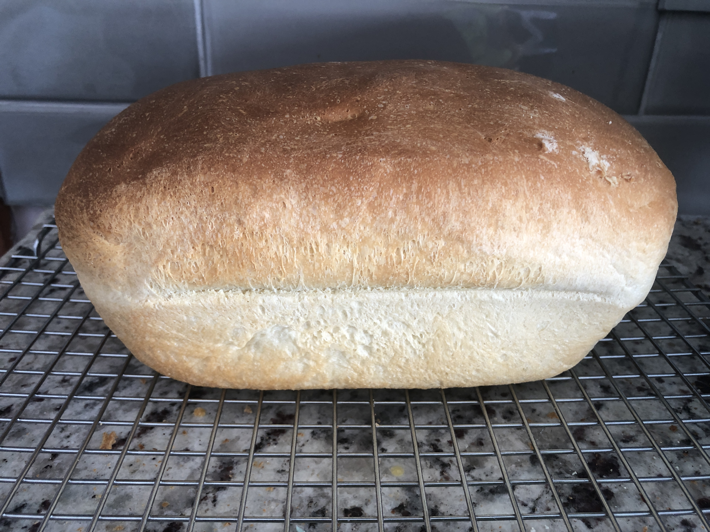

Recipe: White Bread w/ Machine

Here lies your ultimate goal... bread
If you dont know what bread is, well... now you do. Feast your eyes!!
- 1 cup warm water (110 degrees F/45 degrees C)
- tablespoons white sugar
- 1/2 teaspoons salt
- 3 tablespoons vegetable oil
- 3 cups bread flour
- 2 1/4 teaspoons active dry yeast
- Place water, sugar, salt, oil, bread flour and yeast into pan of bread machine
- Bake on White Bread setting. Cool on wire racks before slicing
Slap some mayo and turkey and you're ready for a carb-coma